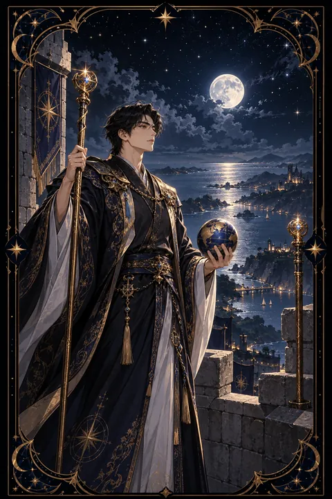

이 게시물은 쿠팡 파트너스 활동의 일환으로, 이에 따른 일정액의 수수료를 제공받습니다.


완드 2 카드 — 더 넓은 세상을 향한 계획
완드 2 카드 한눈에 보기
완드 2 카드 상징 읽기

동네보살의 카드 그림은 전통 라이더–웨이트 덱의 뜻을 새 그림으로 옮긴 것입니다. 아래 상징 설명은 전통 덱의 그림을 기준으로 합니다.
완드 2에는 붉은 겉옷을 입은 영주가 성벽 위에 서서 멀리 바다와 육지를 굽어보고 있습니다. 한 손에는 지팡이를 쥐고 다른 손에는 작은 지구본을 들고 있어 세상을 손바닥 위에 올려 두고 가늠하는 사람처럼 보입니다.
지팡이 하나는 손에 들려 있고 다른 하나는 성벽에 고정되어 있습니다. 벽에 박힌 지팡이는 이미 이룬 성과와 안정된 기반을 뜻하고 손에 든 지팡이는 앞으로 펼칠 계획을 뜻합니다.
성벽 한쪽에 새겨진 붉은 장미와 흰 백합 문양은 열정과 순수한 의도가 함께 어우러져야 한다는 점을 알려 줍니다. 발아래 성은 익숙하고 안전한 영역이며 그 너머의 바다는 아직 가 보지 않은 가능성입니다. 이 카드는 머무를지 떠날지를 저울질하는 순간을 담고 있습니다. 영주가 걸친 붉은 겉옷은 곧 행동에 나서려는 뜨거운 열의를 뜻합니다.
완드 2 카드 정방향 뜻
정방향 완드 2는 지금까지 쌓은 기반을 발판 삼아 더 큰 목표를 설계할 때라는 신호입니다. 눈앞의 성과에 만족하기보다 그다음 무대를 바라보는 시선이 생겼다는 뜻이기도 합니다.
이 카드는 행동 직전의 계획 단계를 강조합니다. 이직, 이사, 유학, 사업 확장처럼 삶의 반경을 넓히는 선택을 앞두고 있다면 필요한 정보와 자원을 차분히 모아 보세요. 막연한 바람을 구체적인 경로로 바꾸는 것이 이 시기의 과제입니다.
손에 든 지구본은 세상이 생각보다 가깝다는 것을 보여 줍니다. 목표를 정하고 단계를 나눈 뒤 첫 단계의 기한을 정해 두면 계획이 실제 움직임으로 이어집니다. 스스로 방향을 정할 수 있는 힘이 당신에게 있다는 점을 기억해 두세요. 계획을 함께 검토해 줄 조언자를 한 명 곁에 두면 판단이 더 단단해집니다.
완드 2 카드 역방향 뜻
역방향 완드 2는 떠날지 머물지 결정하지 못해 제자리에 멈춘 모습입니다. 새로운 도전이 궁금하면서도 익숙한 환경을 벗어나는 것이 두려워 계획만 되풀이하고 있을 수 있습니다.
반대로 충분한 준비 없이 성급하게 뛰어들었다가 방향을 잃는 모습도 이 카드가 경고하는 부분입니다. 두 경우 모두 목표가 흐릿하다는 공통점이 있습니다.
해법은 선택지를 좁히는 것입니다. 정말 원하는 것이 무엇인지 적어 보고 지금 자리에 머무르는 것이 더 낫다고 판단된다면 그 결정을 존중해도 괜찮습니다. 결정을 내리는 순간 불안은 줄어들고 갈팡질팡하던 힘이 한 갈래로 모여들기 시작합니다. 기한을 정해 두고 그날까지 결론을 내리는 방식도 도움이 됩니다. 머무를지 떠날지 어느 쪽을 고르든 스스로 내린 선택이라면 후회는 훨씬 줄어듭니다.
연애에서 완드 2 카드
솔로라면 지금의 생활 반경 밖에서 인연을 만날 가능성이 큰 시기입니다. 새로운 모임이나 여행, 다른 지역 사람과의 교류에 마음을 열어 두면 좋은 만남이 이어질 수 있습니다. 바라는 연애의 그림을 미리 그려 두는 것도 도움이 됩니다.
연애 중이라면 두 사람의 미래를 구체적으로 이야기할 때입니다. 함께 살 곳과 앞으로의 계획과 서로의 목표를 나누며 같은 방향을 보고 있는지 확인해 보세요. 한쪽만 먼 곳을 보고 있다면 대화로 속도를 맞추는 과정이 필요합니다. 거꾸로 놓인 카드라면 관계를 이어 갈지 망설이는 마음이 커진 상태이니 스스로 바라는 것을 정리하는 시간이 먼저입니다. 서로의 꿈이 다르더라도 존중하며 조율할 수 있다면 관계는 오히려 넓어집니다. 막연한 약속보다 가까운 계획 하나를 함께 정해 실천해 보는 것이 좋습니다.
재회·속마음 질문에서 완드 2 카드
재회 질문에서 완드 2가 나오면 상대도 당신도 각자의 앞날을 저울질하는 중이라는 뜻입니다. 다시 만날 가능성은 열려 있지만 누군가 먼저 방향을 정해야 흐름이 움직입니다. 관계를 되돌리고 싶다면 과거를 돌아보는 말보다 앞으로 어떻게 지내고 싶은지를 담은 대화가 설득력을 가집니다. 서두르기보다 스스로 원하는 그림이 분명해졌을 때 연락하는 편이 좋습니다. 카드가 뒤집혀 있다면 결정을 미루는 시간이 길어질 수 있으니 기다림의 기한을 정해 두세요. 상대와 내가 그리는 미래가 여전히 겹치는지 차분히 살펴보고 겹치는 부분이 있다면 그 이야기를 대화의 시작으로 삼아 보세요. 겹치는 부분이 없다면 새로운 길을 향해 떠나는 것도 용기 있는 선택입니다.
일·금전에서 완드 2 카드
일과 직장에서는 장기 계획과 방향 설정이 핵심입니다. 지금 자리에서 성과를 낸 뒤 더 넓은 무대로 옮기고 싶은 마음이 생길 수 있으며 해외 업무나 다른 지역과의 협업 제안이 들어오기도 합니다. 다음 경력의 지도를 그려 보고 필요한 자격과 경험을 목록으로 만들어 보세요.
금전 면에서는 당장의 수익보다 긴 안목의 계획이 빛나는 시기입니다. 한 해 동안의 수입과 지출 흐름을 정리하고 목표 금액을 세워 두면 선택이 쉬워집니다. 계획만 세우고 실행을 미루지 않도록 첫 행동의 날짜를 함께 적어 두는 것이 좋습니다. 한 번에 모든 것을 바꾸기보다 작은 시도로 새 무대를 먼저 경험해 보는 것도 현명한 방법입니다. 계획서를 한 장으로 줄여 보면 다음 걸음이 어디인지 또렷해집니다.
완드 2 카드는 예일까 아니오일까
이미 이룬 기반 위에서 다음을 설계하는 카드라 방향을 정하고 움직일 때에 한해 좋은 답이 됩니다. 결정을 미루면 결과도 늦어지므로 조건부로 읽으며 뒤집힌 카드는 망설임이 커진 상태입니다.
자주 묻는 질문
완드 2 카드 역방향은 나쁜 뜻인가요?
역방향 완드 2는 떠날지 머물지 결정하지 못해 제자리에 멈춘 모습입니다. 새로운 도전이 궁금하면서도 익숙한 환경을 벗어나는 것이 두려워 계획만 되풀이하고 있을 수 있습니다.
완드 2 카드가 연애 질문에 나오면요?
솔로라면 지금의 생활 반경 밖에서 인연을 만날 가능성이 큰 시기입니다. 새로운 모임이나 여행, 다른 지역 사람과의 교류에 마음을 열어 두면 좋은 만남이 이어질 수 있습니다. 바라는 연애의 그림을 미리 그려 두는 것도 도움이 됩니다.
타로 카드는 어떻게 뽑나요?
타로 카드 페이지에서 78장을 섞으면 그중 22장이 펼쳐집니다. 마음이 가는 세 장을 고르면 과거·현재·미래 자리에 놓이고, 한 장씩 뒤집어 자리와 방향에 맞는 풀이를 읽습니다. 정방향과 역방향은 섞는 순간 정해집니다.